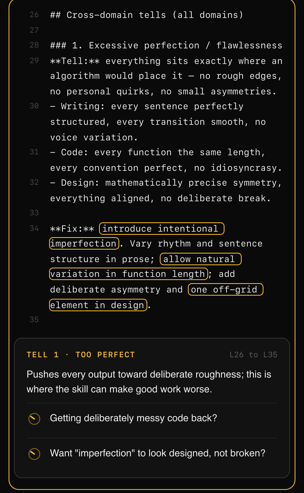

In de-aification, lines 26 to 35 push every output toward deliberate roughness.
skill-xray opens any Claude Code skill as a page you can point at. Each part says what it causes, and which words to change to make it behave differently.
mkdir -p ~/.claude/skills && curl -sL https://github.com/kriss-045/agent-skills/archive/main.tar.gz | tar -xz -C ~/.claude/skills --strip-components=2 agent-skills-main/skills/skill-xray x-ray the skill at ~/.claude/skills/my-skill Free and open source, no account. Read the source

Point at a section and a card says what it does to the output in one sentence, then the words to edit to make it fire more, fire less or do something else.
The file tree shows every file in tokens. The description is paid every session, the body when the skill fires, references only when the body opens them.
Report mode runs 20 yes or no checks and puts the three edits that change the most at the top. Each failed check jumps to its line.